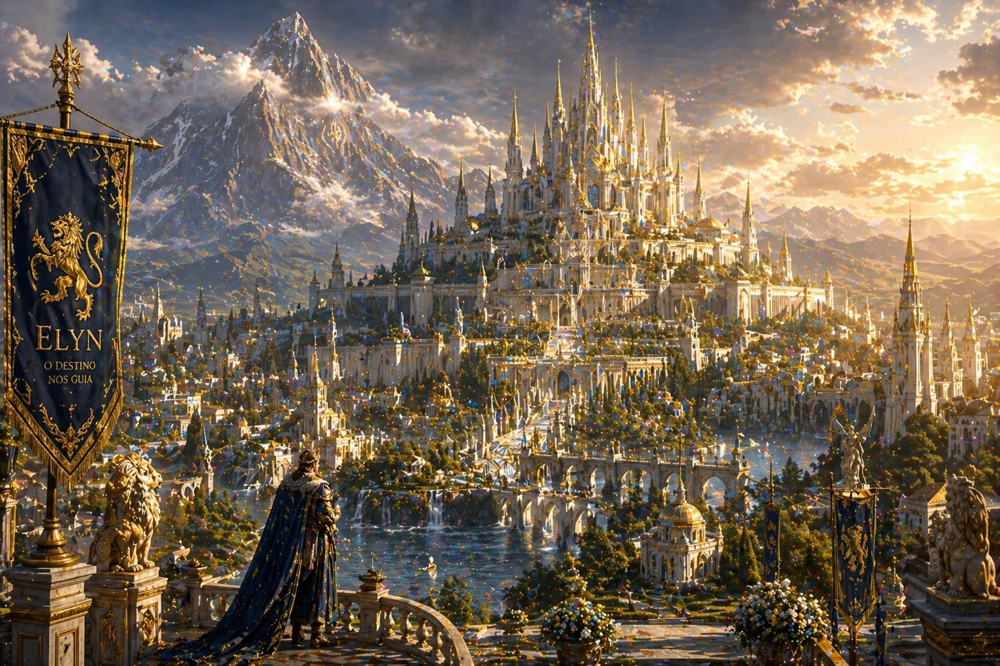

TERRA DA LUZ
Reino de Elyn
Entre muralhas de pedra clara e torres douradas ergue-se o mais influente reino de Etérion.
Elyn é uma terra construída sobre honra, dever e tradição. Seus cavaleiros são respeitados
em todo o continente. Seus governantes carregam o peso de séculos de história.
E seu povo acretida que a luz sempre encontrará um caminho mesmo nos tempos mais sombrios.
Ao amanhacer, os primeiros raios de sol iluminam o majestoso Templo da Grande Luz. No Porto
de Divis, navios partem rumo ao desconhecido.
Na Praça dos Fundadores, reis e rainhas do passado observam silenciosamente o destino do
reino que ajudaram a construir. Mas, nem mesmo as mais belas coroas estão livres das
sombras.
Toda grande história precisa de um começo. E muitas delas começam em Elyn.